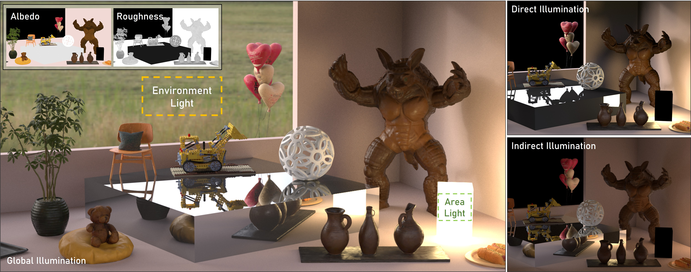
Abstract
Ray tracing enables 3D Gaussian fields to serve as a representation for physically based light transport. Faithful inverse rendering requires forward rendering and backward optimization to be defined within a consistent light-transport pipeline. Existing inverse rendering methods estimate G-buffers via splatting and optimize materials in screen space, tying the recovered properties to a rasterization-based pipeline. This pipeline mismatch, together with simplified rendering equations that neglect indirect illumination, often leads to inconsistent shading, visible artifacts, and inaccurate material-lighting estimation under path-traced rendering. Therefore, we propose PTIR-GS, a splatting-free path-traced inverse rendering framework for 3D Gaussian fields, where forward light transport and backward gradient propagation are defined within a unified ray-tracing pipeline. Our key idea is to define a path-space equivalent interaction model for overlapping Gaussian primitives, under which Monte-Carlo-based path tracing is unbiased for the induced light-transport integral, while pathwise gradients are replayed over the same ray-traced interactions rather than splatting-derived screen-space buffers. The framework optimizes materials and a compact Spherical-Gaussian environment under the full rendering equation with ray-traced visibility and multi-bounce light transport. Extensive experiments demonstrate competitive material inversion and improved path-traced rendering quality, producing more plausible shadows, reflections, and relighting results under global illumination.
Framework
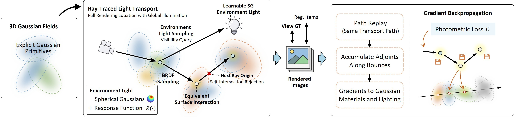
Our framework jointly defines forward rendering and backward optimization for 3D Gaussian fields within a unified ray-tracing pipeline. Given a 3D Gaussian scene, we construct ray-traced equivalent surface interactions, evaluate visibility and multi-bounce path-traced light transport under the full rendering equation, and optimize learnable Spherical-Gaussian environment illumination. Multiple importance sampling reduces the variance of incident radiance estimation. Gradients are propagated through path replay backpropagation via equivalent interactions, ensuring consistency between backward optimization and the forward ray-traced transport paths.
Results
Benchmark Qualitative Comparisons
- We show NVS, material decomposition, and relighting results on the TensoIR and Synthetic4Relight datasets. PTIR-GS achieves consistent qualitative results. Click the buttons above to switch scenes.
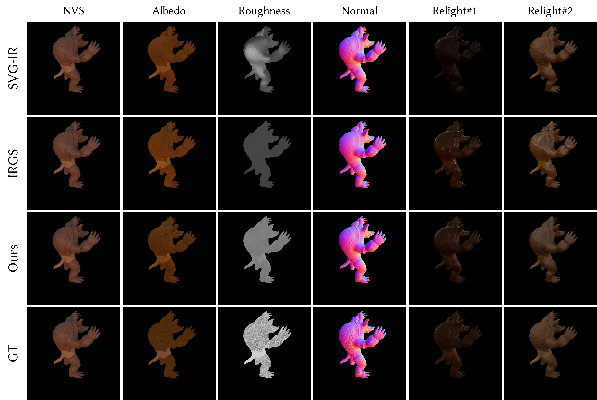
Indirect Illumination Modeling Comparison
- We show scenes with obvious indirect illumination in the TensoIR and Synthetic4Relight datasets. PTIR-GS provides more realistic and detailed indirect illumination than the others. Click the buttons above to switch scenes.
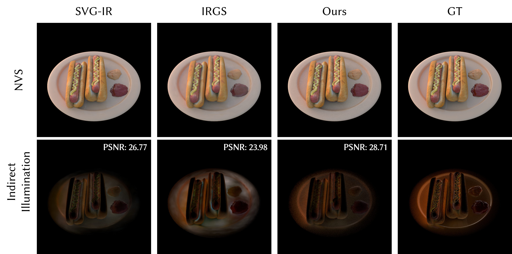
Light Only Display
- We show light-only rendering results to demonstrate that PTIR-GS recovers plausible illumination while preserving scene geometry and object details. Drag the sliders to compare the novel view synthesis results with the light-only components.
Arbitrary Light Relighting
- PTIR-GS is fully based on path tracing and supports relighting with arbitrary light sources, such as point lights, area lights, and environment maps.
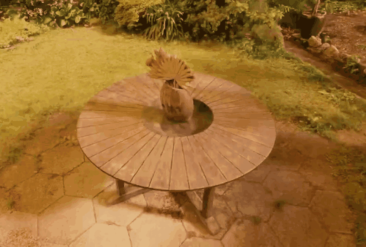
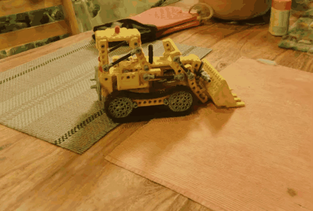
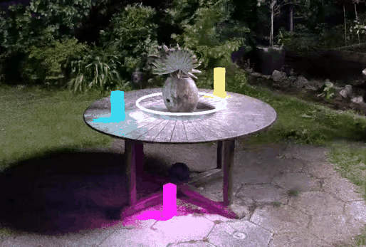
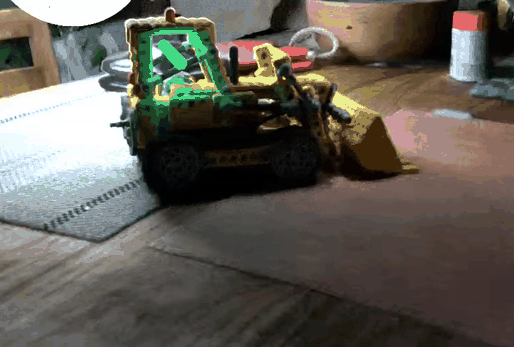
Lego Normal Qualitative Comparisons
- PTIR-GS usually obtains better geometric structures, although we do not deeply explore geometry in this work. Below, we compare the Lego normal maps of different methods (w/o any prior).
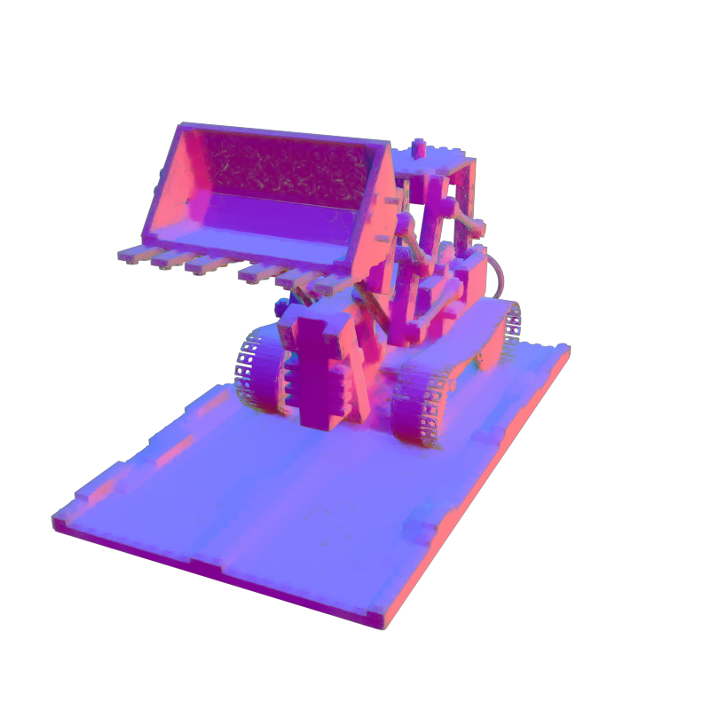
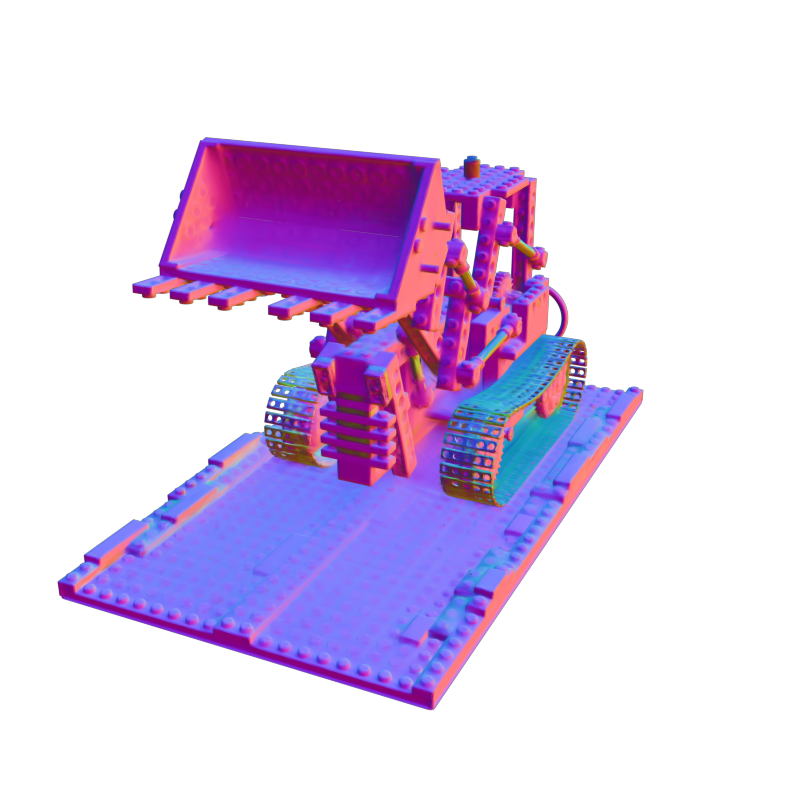
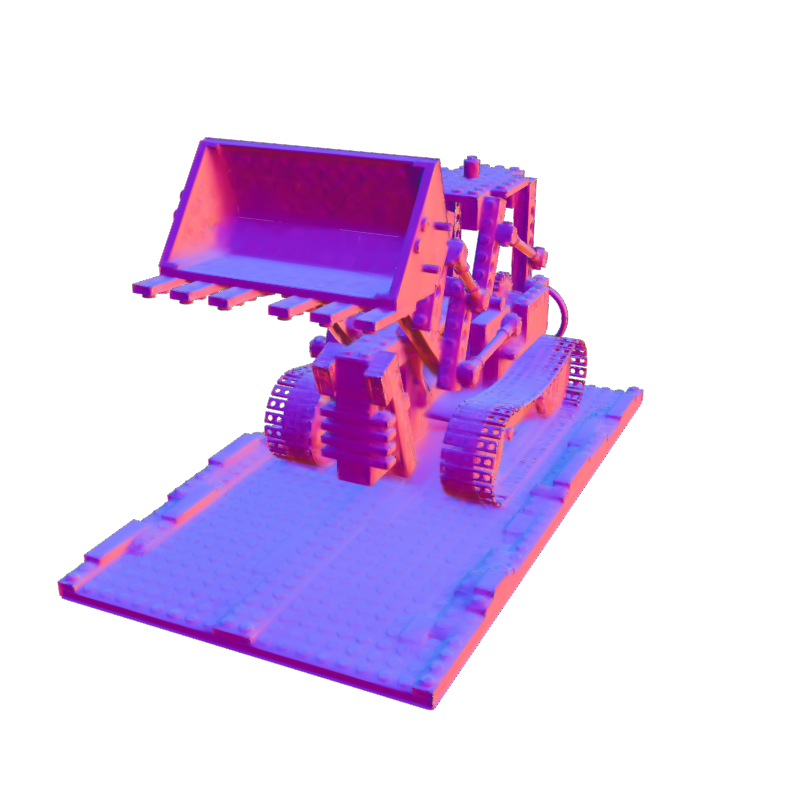
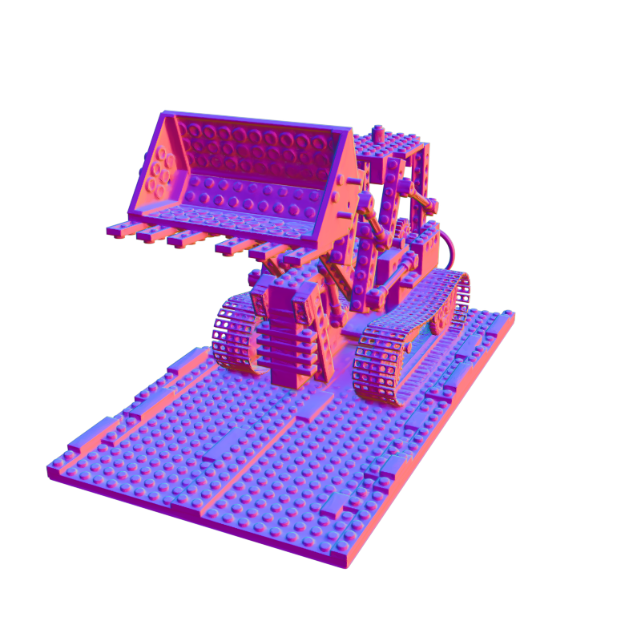
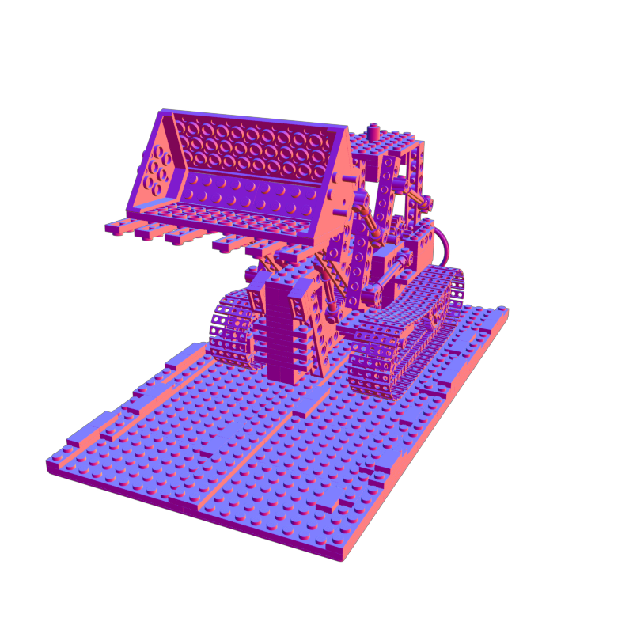
- A possible reason is that, under the ray-tracing framework, the GS depth is determined by its peak response along the ray, rather than by the Gaussian center depth as in splatting, leading to more accurate depth estimation.